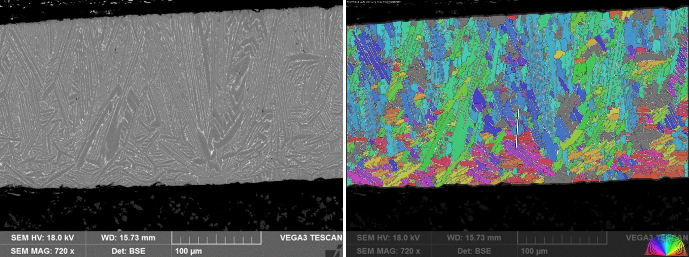
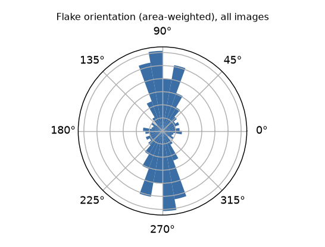
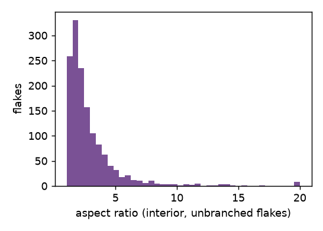

1 images; reading: boundaries (ambiguous profile; boundary reading by default (the agent review checks it)); flake width 4.0 px; code version 77a86cd85c.
Confidence
Twin not usable for this image set (it does not resemble the images closely enough, or flakes cannot be found on it at this size): the accuracy below is not evidence about these images, and no search was run on it; the scaled default settings were used. Treat the numbers as unvalidated; check them in the drawings.
Twin accuracy (held-out twin images, exact truth): worst family ratio 10.50, pooled 7.25 (<= 1 means within the tolerances of config.yaml); dev 8.30: a gap shows how much the search fitted the dev twin images.
The twin resembles the real images only roughly (worst profile mismatch x1.52; flake aspect ratio and width as measured by the method differ by up to x1.22); the twin accuracy carries over only as far as that, and only for structures the generator draws (straight laths in colonies).
Rotation check on the real images (central disk turned by 30 deg and measured again): worst ratio 0.45 (passes); S changes by 0.006, the direction by 1.36 deg, the median aspect ratio by 1.1 %; for comparison, the 95 % interval of S from the finite number of flakes is +/-0.055.
Flakes are only ~4.0 px wide (the profiler over-reads small widths by ~1 px): the images were analysed at 3x size. Near and below ~4-5 px the boundaries are at the resolution limit: orientation and S hold best, aspect ratios and lengths least. Use higher-resolution images if you can.
The image profile was ambiguous between a boundary network and phase islands: check in the drawings that the outlined regions are the flakes you mean; rerun with --mode phase otherwise.
Lengths are in pixels (no --um-per-px given).
Set summary
median
min
max
order parameter S
0.426
0.426
0.426
local S (within colonies)
0.717
0.717
0.717
mean misalignment (deg)
29.7
29.7
29.7
median aspect ratio
2.19
2.19
2.19
median length (px)
11.3
11.3
11.3
median width (px)
4.66
4.66
4.66
flakes used per image
1.3e+03
1.3e+03
1.3e+03
Mean directions differ per image (axial; see the table): a set-level mean direction is only meaningful when the images were taken in the same specimen frame.
Per image
image
mean dir (deg)
S [95 % CI]
local S
misalignment (deg)
AR [95 % CI]
flakes
scratches
sem_bse
86.2
0.426 [0.371, 0.48]
0.717
29.7
2.19 [2.13, 2.25]
1303
0
How accurate is it (twin images with exact truth)
Twin: 18 code-generated images fitted to this set (realism ok: False; worst profile mismatch x1.52).
twin images
params
mean direction err (deg)
S err
misalignment err (deg)
AR err
flake orientation err (deg)
flakes found
worst family ratio
dev
start
1.39
0.201
8.5
0.549
2.55
0.367
8.3
holdout
start
1.93
0.363
14.6
0.535
2.66
0.331
10.5
dev
chosen
1.39
0.201
8.5
0.549
2.55
0.367
8.3
holdout
chosen
1.93
0.363
14.6
0.535
2.66
0.331
10.5
Search: 0 new configurations evaluated (6 incl. cached); objective 9.301 at the start, 9.301 chosen.
Warm start: none (no similar image set in the memory).
Real images: rotation check
Central disk measured as is and turned by 30 deg: direction off by 1.36 deg, S by 0.006, aspect ratio by 0.011 (relative) (worst ratio to tolerance 0.45; <= 1 passes). Necessary, not sufficient.
Drawings (left: original, right: flakes coloured by orientation; grey = not used)

review/sem_bse.jpg

rose.png

aspect_ratio.png
Files
`flakes.csv`: every flake (orientation, length, width, aspect ratio, misalignment, flags)
`image_summaries.csv`: one row per image, with bootstrap intervals